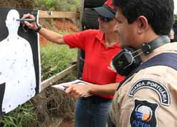

Através do Blog Corporativo, descobri outro site: o blog da Polícia Portuária Federal. Você não sabia que ela existia? Não se preocupe, você não é o único, o Stive não sabia, eu não sabia. E pensando nisso entrei em contato com o editor do blog da PPF para matar a curiosidade, surgindo então a idéia de uma entrevista.
Segundo nosso entrevistado, a Polícia Portuária Federal já existiu de fato, mas foi extinta com o advento da Constituição de 1988, com a criação das Guardas Portuárias. Agora os agentes da GP enfrentam, já há algum tempo, uma batalha para serem reconhecidos como força policial pela Constituição, conseguindo apoio em Brasília para mover uma Proposta de Emenda à CRFB, a PEC 59/2007.A Guarda Portuária eu já conhecia, mas não sabia de suas reivindicações. E não há dúvidas quanto à importância de um controle efetivo e rigoroso dos portos brasileiros, sendo inclusive um problema já abordado aqui no Caso de Polícia no início do ano passado. Por este motivo, é salutar ajudar na divulgação do projeto para criar a Polícia Portuária Federal, cujos capítulos da longa jornada encontram-se imortalizados no Blog da Polícia Portuária Federal.
Vamos então à entrevista concedida pelo Marco Jamil, presidente da Associação dos Guardas Portuários do Rio de Janeiro e diretor da ANPPF - Associação Nacional dos Policiais Portuários Federais:
Que pessoas ou associações estão envolvidas na criação da Polícia Portuária Federal?
No Brasil, temos diversas associações empenhadas em fortalecer o movimento. Temos Associações de Guardas Portuários de Santos, Bahia, Recife, Vitória, Pará, entre outros, que, obedecendo suas limitações financeiras, fazem o que lhes é possível. Posso afirmar que hoje o movimento nacional toma força a cada dia e a cada movimentação nos trabalhos realizados na capital federal.
Em dois anos o projeto da Emenda Constitucional que cria a Polícia Portuária Federal cresceu muito. Hoje temos também, inúmeros sindicatos e federações aliados, alguns que nem mesmo são do segmento portuário. Posso afirmar que hoje, temos ótimos relacionamentos com os sindicatos da Polícia Federal, Federação da Polícia Federal, Polícia Rodoviária, Polícia Legislativa, etc.
O próprio Sindicato Nacional dos Delegados de Polícia Federal, trabalha com afinco junto à nossa categoria para fortalecer esse segmento que só tem a contribuir na segurança das fronteiras marítimas de nosso país.
A criação da Polícia Portuária não cria conflito com a própria Polícia Federal dentro dos Portos?
Não. A Polícia Portuária Federal, já existiu (vide blog), e, em um determinado momento da história, mais precisamente ao término do Regime Militar nos anos 70, a Polícia Portuária passou a denominar-se Guarda Portuária.Sem perder suas características e atribuições policiais, a Guarda Portuária, faz todo o policiamento ostensivo, tanto na área primária quanto nas áreas secundárias adjacentes ao porto organizado. Há Portos em outros Estados, que a Guarda Portuária atua na repressão direta nos crimes junto das Polícias Civis, Rodoviárias e com a própria Federal. A PF tem um papel importantíssimo dentro dos portos que é o controle de imigração. O trabalho ostensivo fica conosco, sempre obedecendo limites legais.
O concurso público para a Guarda Portuária é organizado pelos respectivos estados, ou é um concurso federal regionalizado?
Somos concursados em cada estado brasileiro, tudo com autorização do Governo Federal. Cada Cia. DOCAS tem seus parâmetros e um número diferente de Guardas. Existem estados em que os Portos Organizados (Lei 8.630/1993), são administrados pelo Estado ou pelo Município, mas preservando mais uma vez, os atributos inerentes ao policiamento ostensivo dentro destas fronteiras.
Há estados em que um Guarda Portuário leva pra casa, em torno de R$ 4.000,00 com suas gratificações e outros estados que esse valor gira em torno de R$ 1.200,00.
Estamos trabalhando com empenho para acabar com esta fragmentação. Hoje, as Cia. DOCAS, administradas pelo Governo Federal, estão subordinadas à Secretaria Especial de Portos, órgão este ligado diretamente ao Presidente da República.
Cada Cia. DOCAS prepara seu edital, disciplinas das provas, teste físico etc. em se tratando de uma entrada de fronteira, onde a troca de containers acontece constantemente entre continentes, as possibilidades de contrabando de armas, drogas, pessoas, animais são muito grandesO concurso, que aconteceu depois de 20 anos sem contratações, foi divulgado em jornais de comunicação, rádio e até mesmo em jornais específicos para concursos.
No Brasil hoje, há pelo menos 3 Estados que estão com curso de formação em andamento. Posso citar os companheiros de Vitória/BA, que estão fazendo o treinamento junto da Polícia Militar, treinando e se qualificando com profissionais da área Portuária, e tendo disciplinas diretamente com as Praças.
Que matérias de estudo são cobradas na prova para GP? E quando foi realizado o último concurso?
Matemática, Português e Informática, teste físicos com natação, avaliações de saúde foram cobrados no último concurso há 4 anos passados. Cada Estado, como disse, faz seu edital. Respeitam o nível de escolaridade secundário e fazem suas provas com instituições renomadas e experientes na aplicação de avaliações.
Temos orgulho de dizer que na Guarda Portuária do Rio de Janeiro, temos entre nós, advogados, médicos, matemáticos, físicos, administradores, etc. O Porto de Santos, que possui um contingente de 450 homens e mulheres, também tem pessoal com as qualificações das mais diversas que se possa imaginar. Ultimamente temos perdido muitos Guardas Portuários, principalmente aqui no Rio de Janeiro, que foram exercer funções de delegados, policiais rodoviários federais e até mesmo foram para a Polícia federal. O país ganha, a Guarda Portuária perde.
Qual o efetivo aproximado das atuais Guardas Portuárias?
Somos um contingente aproximado de 1.500 homens e mulheres em todos os Portos Organizados. No Rio de Janeiro 400 Guardas lotados nos Portos de Niterói, Rio de Janeiro, Itaguaí e Angra dos Reis. Em Santos são 450, Vitória 180, e um contingente menor em cada porto menor, como Bahia, Pará, Rio Grande do Norte, Rondônia, Recife, Paranaguá, etc.
Este contingente, como em outros órgãos do governo, está aquém das necessidades para se prover uma segurança tranqüila. Hoje, com a implantação do ISPS-CODE (Sistema Internacional de Segurança), a Guarda Portuária trabalha dobrado, dia e noite para manter os portos livres de terroristas e reprimindo todo e qualquer tipo de ilícito que venha a ser tentado nesse contexto.
Qual a missão dos guardas portuários, e que estrutura têm à disposição para realizá-la?
O policiamento interno (área primária) e rondas externas (área secundária), são uma rotina. Controlar todo acesso de pessoas e cargas nos portos organizados, prover a vigilância e policiamento ostensivo, reprimindo crimes contra pessoas, patrimônio, contrabando e descaminho, tráfico de pessoas e animais.
As prisões são constantes na Guarda Portuária em todo o País. No mês passado, nós fizemos a captura de 3 criminosos. O primeiro já tinha cumprido 20 anos de cadeia e estava em liberdade condicional, o segundo era procurado, Este contingente, como em outros órgãos do governo, está aquém das necessidades para se prover uma segurança tranqüilae um terceiro já tinha passagens por pequenos delitos em sua infância. Em Santos, essa semana, a Guarda Portuária interrompeu um crime de "trote" que arrebataria um senhor de idade que perambulava com a quantia de R$28.000,00 para pagar um falso resgate de um filho que estava no trabalho, normalmente, naquele instante. Também o pessoal de Santos, desarticulou um grande esquema de fraude de combustíveis.
Pra se ter mais uma idéia, já identificamos e conduzimos para a Polícia Federal um integrante das FARC que, em fuga, e depois de ser "jogado" para fora de um navio em alto-mar, nadou até nossa costa e adentrou no Porto do Rio pelo mar. Certamente, seria aliciado por qualquer facção criminosa que tivesse a sorte de encontrá-lo.
A Guarda Portuária faz o seu papel, sempre contribuindo com o que tem de melhor: pessoal.
Trabalhamos com pistolas, carabinas 12, tonfas, algemas, etc. Em alguns Estados, como o de Santos por exemplo, possuem lanchas e cães adestrados. Possuímos viaturas personalizadas, micro-ônibus e rádio comunicadores específicos para nossas atividades rotineiras. Temos departamentos internos como de Investigação, Policiamento, de trânsito, canil, etc. Em muitas operações, participamos efetivamente com as Polícias. Há uma harmonia entre as instituições.
Hoje com a nossa luta, o Guarda Portuário em todo o País, tem seu porte de armas garantido na LEI No 10.826, DE 22 DE DEZEMBRO DE 2003. Todas as taxas de registro e porte também obtivemos gratuidade. Isso mostra o reconhecimento de nosso trabalho pelo próprio governo.
A Guarda Portuária é subordinada à quem atualmente?
Somos subordinados às Cia DOCAS, que por sua vez, são subordinadas à Secretaria Especial de Portos, subordinada diretamente à Presidência da República.
Qual o salário de um guarda portuário?
Há uma disparidade enorme nesse sentido. Há estados em que um Guarda Portuário leva pra casa, em torno de R$ 4.000,00 com suas gratificações e outros estados que esse valor gira em torno de R$ 1.200,00. Em todos os estados, há benefícios como planos de saúde extensivo para a família, auxílio alimentação, estudos, cursos, etc.
Como as entidades de classe da GP têm se articulado para provocar a tramitação da PEC 59/2007?
A PEC 59/07 foi elaborada pelo deputado federal Márcio França/PSB. Nosso trabalho está compreendido em viagens constantes à Brasília, para sensibilizar parlamentares (o que não é difícil quando explanamos sobre as necessidades), buscar aliados, parceiros, etc.
O custo é altíssimo e pesado para todas as Associações, e inclusive estamos criando a ANPPF, Associação dos Policiais Portuários Federais, em Brasília. Nossa Assessoria Jurídica está dando prosseguimento na legalização desta associação que tem o objetivo de angariar fundos para a causa e divulgar mais o nosso movimento. Na constituição de 1988, criou-se a Polícia Rodoviária e a Polícia Ferroviária, e, por motivos diversos, deixou-se de criar a própria Polícia Portuária Federal. Buscamos o reparo desse erro.
Viagens a outros estados também são importantes para a motivação e mobilização de nosso pessoal. Trocas de idéias, parcerias com outras polícias e filiações à associações diversas e de cunho policial... vale inclusive citar que hoje um guarda portuário pode associar-se ao I.P.A. - International Police Association, uma associação internacional de polícia, que nos reconhece como forma policial de fato.
Qual a principal dificuldade enfrentada na luta pela aprovação da PEC 59/2007?
Até agora, as dificuldades encontradas, foram financeiras e a ansiedade. Não ouvi nenhum deputado ou senador que fosse contra o projeto. Muitos que não conheciam, hoje sabem quem somos e de nossa luta merecida. Dentre os deputados mais populares, posso listar Marcelo Itagiba, Marina Magessi, Jorge Bittar, Rodrigo Mais, Romeu Tuma, Renato Casagrande, dentre outros. Aqui no Rio de Janeiro temos o Wagner Montes, que apesar de ser deputado estadual, nos fortalece quando divulga nosso pleito na TV.
Posso também acrescentar que no último dia 24 de junho, houve um pedido em plenário do dep. Arnaldo Farias de Sá/SP, para se acelerar a criação da comissão especial na Câmara dos Deputados, pois já que temos o parecer pela admissibilidade na CCJC por unanimidade ao nosso projeto.
Tenho conhecimento de um projeto idealizado pela Polícia Rodoviária Federal para absorver as funções e estruturas das Guardas Portuárias e da Polícia Ferroviária Federal. Os agentes da GP são favoráveis?
O projeto cria a Polícia Ostensiva da União, POU. Esse projeto une a polícia Rodoviária, Ferroviária e a Portuária. Nesse projeto cria-se a PPF, aproveitando nosso pessoal e inclusive abarca a segurança em aeroportos, que hoje fica a cargo de uma empresa terceirizada pela INFRAERO. Essas são as informações que temos até o momento, pois o projeto ainda está na fase de planejamento, já foi nos apresentado mas não sabemos em que situação está agora. Sabemos apenas que a PRF, nossa parceira, nos absorveria no novo quadro funcional da POU.
Como uma nova organização das GGPP poderia auxiliar as forças policiais já existentes no combate ao crime?
O campo é vasto quando se fala em segurança portuária. Ali, em se tratando de uma entrada de fronteira, onde a troca de containers acontece constantemente entre continentes, as possibilidades de contrabando de armas, drogas, pessoas, animais são muito grandes. A Guarda Portuária faz o seu papel, sempre contribuindo com o que tem de melhor: pessoal.
O Brasil teria muito a ganhar com a criação da PPF. Cargas seriam fiscalizadas com mais freqüência junto com a Receita Federal - que também pena com a falta de pessoal, as arrecadações de impostos de Importações e Exportações aumentariam, a entrada de drogas e armas seria dificultada, etc. PPF Já. Apenas uma questão de JUSTIÇA.